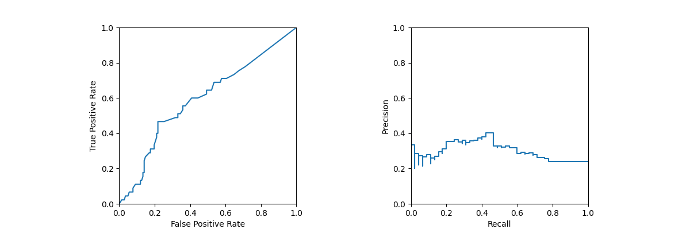
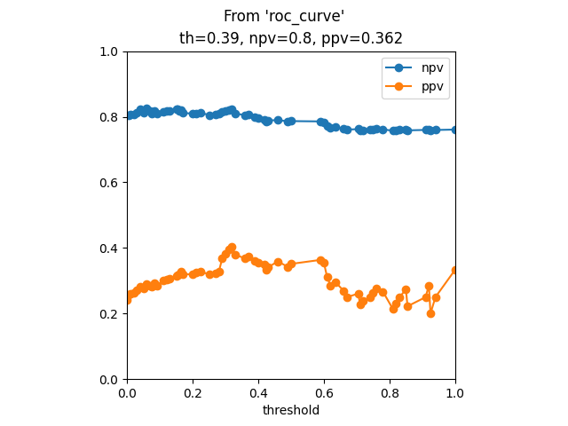
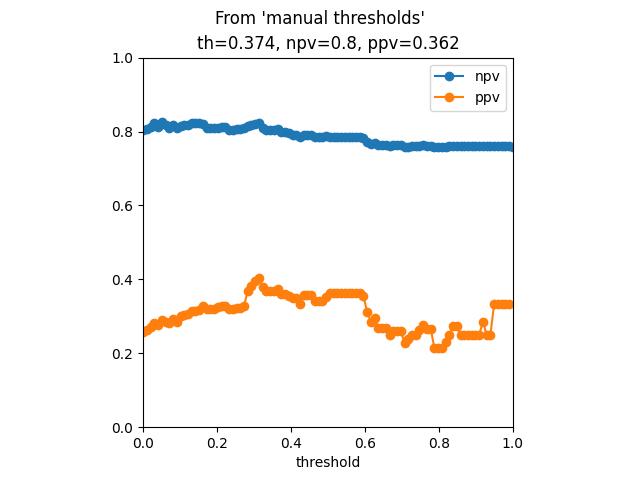

Note
Click here to download the full example code
Threshold moving¶
- 

- 
- 
Out:
Results from 'roc_curve'
th ppv npv sens spec gmean
66 0.000 0.240642 NaN 1.000000 0.000000 0.000000
65 0.005 0.257353 0.803922 0.777778 0.288732 0.148018
64 0.010 0.261538 0.807018 0.755556 0.323944 0.147488
63 0.020 0.264000 0.806452 0.733333 0.352113 0.146957
62 0.030 0.271186 0.811594 0.711111 0.394366 0.207074
.. ... ... ... ... ... ...
4 0.920 0.285714 0.761111 0.044444 0.964789 0.529564
3 0.925 0.200000 0.758242 0.022222 0.971831 0.508150
2 0.940 0.250000 0.759563 0.022222 0.978873 0.494730
1 1.000 0.333333 0.760870 0.022222 0.985915 0.473888
0 2.000 NaN 0.759358 0.000000 1.000000 0.000000
[67 rows x 6 columns]
Results from manual
th ppv npv sens spec
0 0.000000 0.257353 0.803922 0.777778 0.288732
1 0.010101 0.264000 0.806452 0.733333 0.352113
2 0.020202 0.271186 0.811594 0.711111 0.394366
3 0.030303 0.280702 0.821918 0.711111 0.422535
4 0.040404 0.276786 0.813333 0.688889 0.429577
.. ... ... ... ... ...
95 0.959596 0.333333 0.760870 0.022222 0.985915
96 0.969697 0.333333 0.760870 0.022222 0.985915
97 0.979798 0.333333 0.760870 0.022222 0.985915
98 0.989899 0.333333 0.760870 0.022222 0.985915
99 1.000000 NaN 0.759358 0.000000 1.000000
[100 rows x 5 columns]
8 9 10 11 12 13 14 15 16 17 18 19 20 21 22 23 24 25 26 27 28 29 30 31 32 33 34 35 36 37 38 39 40 41 42 43 44 45 46 47 48 49 50 51 52 53 54 55 56 57 58 59 60 61 62 63 64 65 66 67 68 69 70 71 72 73 74 75 76 77 78 79 80 81 82 83 84 85 86 87 88 89 90 91 92 93 94 95 96 97 98 99 100 101 102 103 104 105 106 107 108 109 110 111 112 113 114 115 116 117 118 119 120 121 122 123 124 125 126 127 128 129 130 131 132 133 134 135 136 137 138 139 140 141 142 143 144 145 146 147 148 149 150 151 152 153 154 155 156 157 158 159 160 161 162 163 164 165 166 167 168 169 170 171 172 173 174 175 176 177 178 179 180 181 182 183 184 185 186 187 188 189 190 191 192 193 194 195 196 197 198 199 200 201 202 203 204 205 206 207 208 209 210 211 212 213 214 215 216 217 218 219 220 221 222 223 224 225 226 227 228 229 230 231 232 233 234 235 236 237 238 239 240 241 242 243 244 245 246 247 248 249 250 251 252 253 254 255 256 257 258 259 260 261 262 263 264 265 266 267 268 269 270 271 272 273 274 275 276 277 278 279 280 281 282 283 284 285 286 287 288 289 290 291 | # Libraries
import numpy as np
import pandas as pd
import matplotlib.pyplot as plt
# Libraries scikits
from sklearn.datasets import fetch_openml
from sklearn.datasets import load_iris
from sklearn.datasets import load_breast_cancer
from sklearn.preprocessing import StandardScaler
from sklearn.pipeline import make_pipeline
from sklearn.linear_model import LogisticRegression
from sklearn.ensemble import ExtraTreesClassifier
from sklearn.model_selection import train_test_split
def display_npv_ppv_curve(ppv, npv, ths, idx):
"""This method plots the curve
Parameters
----------
ppv: array-like
npv: array-like
ths: array-like
idx: integer
"""
# Display
f, axes = plt.subplots(1, 1)
axes.plot(ths, npv, marker='o', label='npv')
axes.plot(ths, ppv, marker='o', label='ppv')
axes.set(aspect='equal', xlim=[0,1], ylim=[0,1],
xlabel='threshold', title='th={0}, npv={1}, ppv={2}' \
.format(round(ths[idx], 3),
round(npv[idx], 3),
round(ppv[idx], 3)))
plt.legend()
def npv_ppv_from_sens_spec(sens, spec, prev):
"""Compute npv and ppv.
Parameters
----------
sens: array-like
spec: array-like
prev: float
"""
npv = (spec * (1 - prev)) / ((spec * (1 - prev)) + ((1 - sens) * prev))
ppv = (sens * prev) / ((sens * prev) + ((1 - spec) * (1 - prev)))
return npv, ppv
# ----------------------
# Load data
# ----------------------
# Fetch data
X, y = fetch_openml(data_id=1464,
return_X_y=True,
as_frame=True)
# Format y to binary (0,1)
y = y.replace({'1':0, '2':1})
# Split
X_train, X_test, y_train, y_test = \
train_test_split(X, y, stratify=y)
# ----------------------
# Create pipeline
# ----------------------
# Create pipeline
clf = make_pipeline(
StandardScaler(),
#LogisticRegression(random_state=0)
ExtraTreesClassifier(n_estimators=100)
)
# Train
clf.fit(X_train, y_train)
# Predictions
y_pred = clf.predict(X_test)
y_prob = clf.predict_proba(X_test)
# .. note: Some classifiers do not have the decision
# function method but all implement the
# predict_proba.
#y_score = clf.decision_function(X_test)
# -----------------------
# Show confusion matrix
# -----------------------
# .. note: We are using Display objects to plot
# the graphs, they could also be displayed
# using the functions or matplotlib
# directly.
#
# plot_roc_curve(clf, X_test, y_test, ax=ax_roc, name=name)
# plot_det_curve(clf, X_test, y_test, ax=ax_roc, name=name)
# Libraries
from sklearn.metrics import confusion_matrix
from sklearn.metrics import ConfusionMatrixDisplay
from sklearn.metrics import roc_curve
from sklearn.metrics import RocCurveDisplay
from sklearn.metrics import precision_recall_curve
from sklearn.metrics import PrecisionRecallDisplay
# Prevalence
prev = np.sum(y_test) / len(y_test)
# Confusion matrix
cm = confusion_matrix(y_test, y_pred)
# .. note: It is possible to use either y_score
# or y_prob in the roc_curve function
# .. note: sens=tpr, spec=1-fpr
# Compute ROC curve
fpr, tpr, ths1 = roc_curve(
y_test, y_prob[:, 1],
drop_intermediate=False)
# .. note: ppv=prec, sens=recall
# Compute PR curve
prec, recall, ths2 = \
precision_recall_curve(y_test, y_prob[:, 1])
# Create plot objects
cm_display = ConfusionMatrixDisplay(cm)
roc_display = RocCurveDisplay(fpr=fpr, tpr=tpr)
pr_display = PrecisionRecallDisplay(precision=prec, recall=recall)
# Create figure
f, axes = plt.subplots(1, 2, figsize=(12, 4))
axes = axes.flatten()
# Display
cm_display.plot()
roc_display.plot(ax=axes[0])
pr_display.plot(ax=axes[1])
# Configure
for ax in axes:
ax.set(aspect='equal', xlim=[0,1], ylim=[0,1])
plt.tight_layout()
# ---------
# Option I
# ---------
# Compute the npv and ppv from the sensitivity
# and specificity values obtained from the
# 'roc_curve' function.
# Compute ROC curve
fpr, tpr, ths1 = roc_curve(
y_test, y_prob[:, 1],
drop_intermediate=False)
# Compute npv and ppv
npv, ppv = npv_ppv_from_sens_spec( \
sens=tpr, spec=1-fpr, prev=prev)
# Create DataFrame
results = pd.DataFrame(
data=np.array([ths1, ppv, npv, tpr, 1-fpr]).T,
columns=['th', 'ppv', 'npv', 'sens', 'spec']
).sort_values(by='th')
# Add gmean
results['gmean'] = np.sqrt(tpr * (1-fpr))
# Find closest to 0.8
idx = np.nanargmin(np.abs(npv - 0.8))
# Find best gmean
idx2 = np.argmax(results.gmean)
# Display
display_npv_ppv_curve(ppv, npv, ths1, idx)
# Title
plt.suptitle("From 'roc_curve'")
# Show
print("\n\nResults from 'roc_curve'")
print(results)
"""
# ---------
# Option II
# ---------
# NOT WORKING!
#
# Compute the npv by knowing that it is the inverse
# of the precision, thus calling the function
# 'precision_recall_curve' with opposite labels and
# probabilities.
# .. note: invprec=npv
# .. note: invrec=fnr
# Computed inverted PR curve
invprec, invrec, invths2 = \
precision_recall_curve(y_test, y_prob[:, 0],
pos_label=clf.classes_[0])
# Create DataFrame
results = pd.DataFrame()
results['th'] = invths2[::-1]
results['npv'] = invprec[1:]
results['ppv'] = 0.0
results = results.sort_values(by='th')
# Find closest to 0.8
idx = np.nanargmin(np.abs(invprec - 0.8))
# Show
print("\n\nResults from 'precision_recall_curve'")
print(results)
print("\nIndex: {0} | Threshold: {1} | NPV: {2}" \
.format(idx, invths2[idx-1], npv[idx]))
# Display graph
display_npv_ppv_curve(
results.ppv,
results.npv,
results.th,
idx)
# Title
plt.suptitle("From 'precision_recall_curve'")
"""
# ----------
# Option II
# ----------
# Perform the computation of metrics and the threshold
# search based on a condition (e.g. npv closest to an
# specific value) manually.
# Thresholds
thresholds = np.linspace(0,1,100)
# Metrics
def metrics(y_test, y_prob, th, **kwargs):
# Libraries
from sklearn.metrics import confusion_matrix
# Compute confusion matrix
cm = confusion_matrix(y_test, y_prob>th)
tn, fp, fn, tp = cm.ravel()
# Compute metrics
return {'th': th,
'ppv': tp/(tp+fp),
'npv': tn/(tn+fn),
'sens': tp/(tp+fn),
'spec': tn/(tn+fp)}
# Compute scores
scores = [metrics(y_test, y_prob[:,1], t) \
for t in thresholds]
# Create DataFrame
results = pd.DataFrame(scores)
# Find idx where npv is closest to 0.8
idx = np.nanargmin(np.abs(results.npv - 0.8))
# Show
print("\n\nResults from manual")
print(results)
# Display graph
display_npv_ppv_curve(
results.ppv,
results.npv,
results.th,
idx)
# Title
plt.suptitle("From 'manual thresholds'")
# Show
plt.show()
|
Total running time of the script: ( 0 minutes 0.565 seconds)